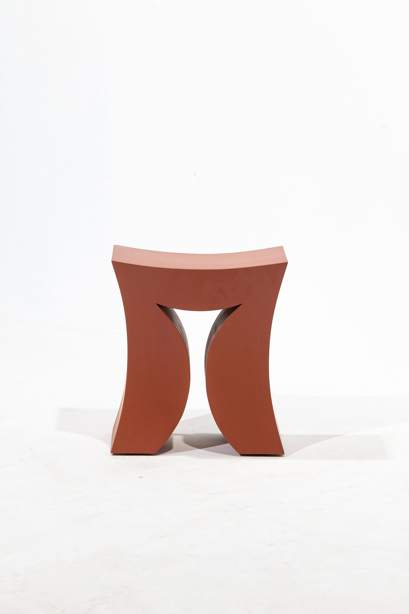
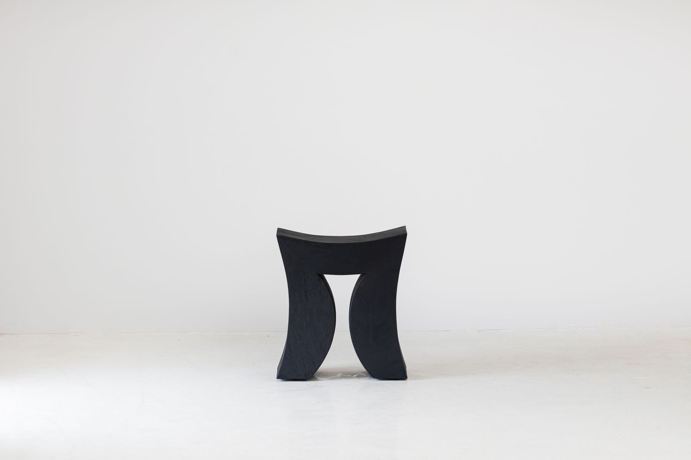
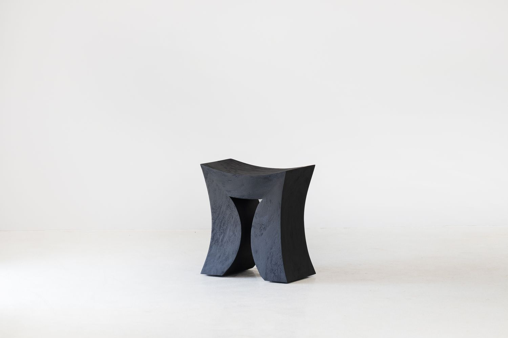
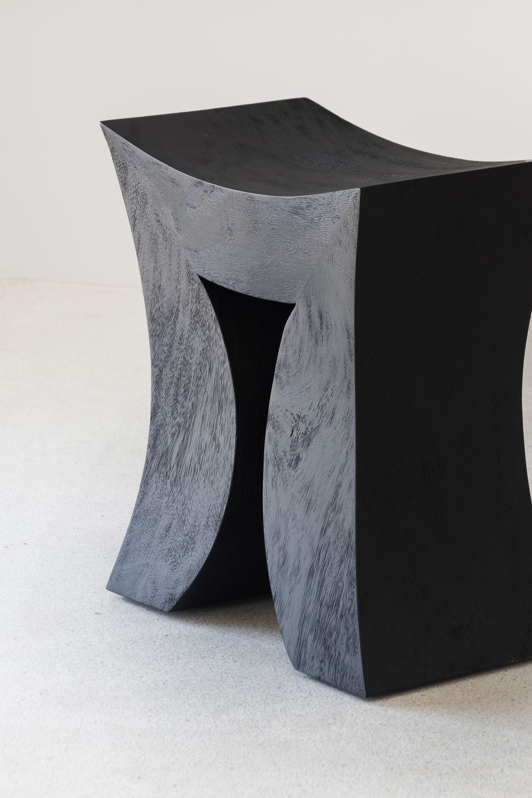
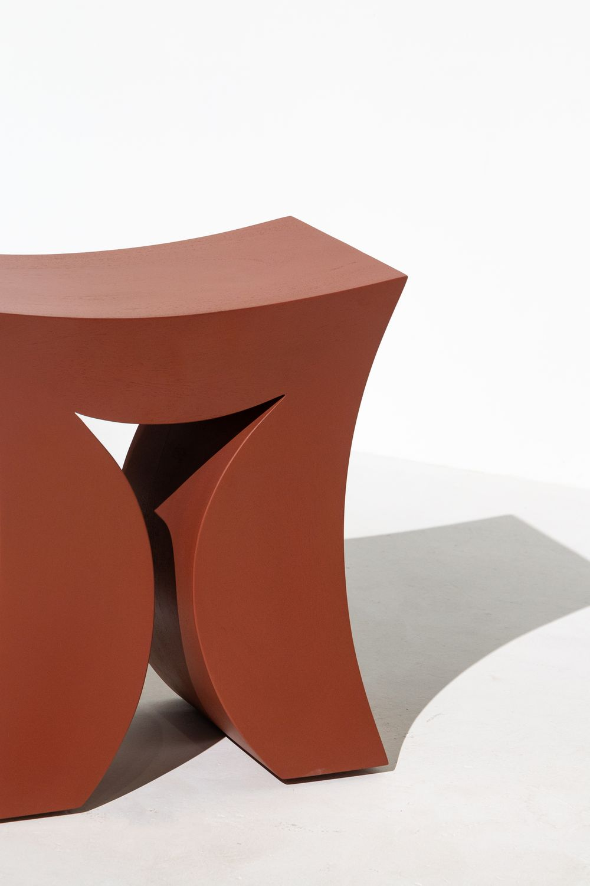

WORK 05 / 29
Torii Stool
A contemporary timber stool inspired by the torii gate.
Year2022
MaterialsChanchuri
StageProduced

DESIGN STORY
Torii Stool reinterprets the simple architectural gesture of the Japanese torii gate as an object for everyday use. Its curved timber volumes and purposeful proportions draw attention to the grain and character of the wood. Minimal yet distinctive, the stool seeks a balance between cultural reference, material and function. The work was presented by Moonler at Salone del Mobile.Milano in 2023.
PROJECT LINKS
- Moonlerwww.moonler.com
PROJECT DETAILS
- Brand / Manufacturer
- Moonler
SELECTED PRESENTATIONS
- 2023Salone del Mobile.Milano · Rho, Milan, Italy



